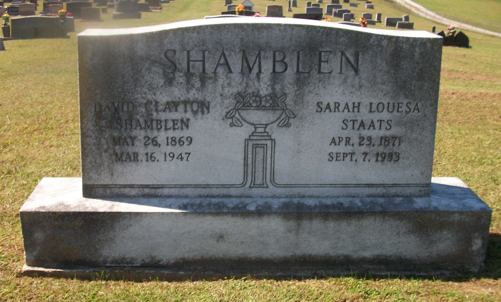

Sarah Louise Staats
23 April 1871 – 7 September 1933
Quick Facts
Immediate Family
Parents
William F. Staats (1841–1914) DOCUMENTEDEmily Jane Casto (1850–1911) DOCUMENTED
Children
Belvin "Moody" Shamblen (born 23 March 1889, Fairplain; died 1966, New Port Richey, Florida) SUPPORTEDFrankie Odell Shamblen (born 13 September 1891; died 8 February 1975, Jackson, West Virginia; married Parsons) SUPPORTED
Orpha Pearl Shamblen (born 23 March 1895; died 26 April 1955, Charleston, West Virginia; married Casto) SUPPORTED
Rome LaFayette Shamblen (born 12 May 1897; died 13 April 1983, Anna Maria, Florida) SUPPORTED
Sarah Lillie Shamblen (born 1904; married Foglesong) SUPPORTED
Beryl Clayton Shamblen (born 4 March 1906; died 1980) SUPPORTED
Arvel Lawrence Shamblen (born 20 January 1909; died 11 January 2001) DOCUMENTED
Orville Shamblen (born 20 February 1909; fate unknown — not Arvel's twin) SUPPORTED
Josephine Shamblen (married Fisher) SUPPORTED
Children's birth dates come from family lists and are claimed, not documented; the sibling set is corroborated by a son's written memoir. The given name "Sarah Louise" belongs to the mother; the daughter is Sarah Lillie — do not conflate them. Geni links seven children and calls the daughter Sarah Louise Foglesong; Orville and Josephine are not linked as children on Geni.
Siblings
William A. Staats SUPPORTEDCordelia Parsons-Stout SUPPORTED
Ava Belle Pfost SUPPORTED
Hollie Franklin Staats SUPPORTED
Enoch Staats SUPPORTED
Cora D Simmons SUPPORTED
Dora Anna Skidmore SUPPORTED
On Family Tree Sites
Life Timeline
23 April 1871 · age 0
Born, Jackson County, West Virginia SUPPORTED
1888 · age about 17
Married David Clayton Shamblen, 31 May, at her father William F. Staats's residence, by A. S. Blagg, United Brethren minister DOCUMENTED
1889–1909 · ages about 18–38
Nine children born at Fairplain: Belvin, Frankie, Orpha, Rome, Sarah Lillie, Beryl, Arvel, Orville, Josephine SUPPORTED
1933 · age about 62
Died 7 September, Jackson County, West Virginia SUPPORTED
Life Story
Sarah Louise Staats was born 23 April 1871 in Jackson County, West Virginia, the daughter of William F. Staats and Emily Jane Casto. Her death certificate names her father William Staats, and the Jackson County marriage index anchors her parents' marriage.
She married David Clayton Shamblen on 31 May 1888 at her father's residence, by A. S. Blagg, a United Brethren minister. The license, issued 26 May 1888, records her as "Louisa Stoots," the clerk's phonetic rendering of Staats. The 1921 Staats genealogy records the marriage the same way: "Sarah Louisa Staats, daughter of William Staats, married D. C. Shamblin May 31, 1888."
Sarah and David had nine children at Fairplain. No occupation is recorded for her. She died on 7 September 1933 in Jackson County. Her name and dates appear on the shared headstone with David at Fairview Cemetery, Fairplain. No portrait of her has been found.
Photo Gallery

Sources and Evidence
- West Virginia Vital Research Records ID 11186411: marriage license 26 May 1888 (bride "Louisa Stoots" 17); married 31 May 1888 at William F. Staats's residence, by A. S. Blagg DOCUMENTED
- West Virginia death index: "Sarah Louisa Shamblen," died 7 September 1933, Jackson County, age 62 SUPPORTED
- Harold Staats, Genealogy of the Staats Family (1921): "Sarah Louisa Staats, daughter of William Staats, married D. C. Shamblin May 31, 1888" SUPPORTED
- Jackson County marriage index 1831–1879, p. 65, via Casto Connections: William F. Staats × Emily Jane Casto (parents' marriage) DOCUMENTED
Grades: DOCUMENTED an original record says it · SUPPORTED several records point to it · FAMILY ACCOUNT the family's own telling · UNPROVED a lead, not proved.
Research Notes and Open Questions
- Birth: her age 17 on the 1888 license and age 62 at death both point to about 1871. Her shared headstone reads Apr. 23, 1871, and Tricia's Ancestry tree gives the same exact date — that is why the page carries 23 April 1871, at SUPPORTED, not DOCUMENTED. No birth record has been found.
- Her headstone spells her middle name "Louesa" — the family name is carried as Louise, matching her marriage license (bride "Louisa Stoots") and the family records.
- Burial: Fairview Cemetery, Fairplain, per the shared "SHAMBLEN" headstone photographed on David's Find a Grave memorial 124132493, naming Sarah Louise, 1871–1933. Geni shows no burial for her. No separate Sarah memorial has been confirmed — the Find a Grave Sarah search was blocked, so a separate memorial's existence is unknown, not "none found."
- Death date: Geni carries 7 September 1933, matching the death index. A confirmed "West Virginia, Deaths" match record on Geni gives July 9, 1933 instead — an unresolved conflicting lead; the page keeps 7 September from the index.
- Geni's timeline gives the marriage year as 1891 against the 31 May 1888 record; the page keeps 1888 from the record.
- Her name is carried as Sarah Louise; the records also read "Louisa" (license "Louisa Stoots," death index "Sarah Louisa," 1921 genealogy "Sarah Louisa"). The daughter's name is Sarah Lillie — the two must not be conflated.
- No portrait of Sarah has been found. Her profile Doc carries no pictures, and her couple folder holds only two courthouse place photos; the only photograph on her page is the shared headstone.
- Tricia's Ancestry tree lists eight children — it adds a daughter Louie (born 1904) and omits Orville and Josephine, and it shows none of the daughters' married names (Parsons, Casto, Foglesong). Whether Louie/Lovie is a separate daughter or a duplicate of Sarah Lillie is unresolved; the page roster follows the couple profile's nine children.
- Her mother's name is carried as Emily Jane Casto from the marriage index and her father's household; the tree gives Emily's parents as Nicholas Casto × Telitha Casto.
Profile history: Created 4 November 2026 from the family couple profile and research notes.